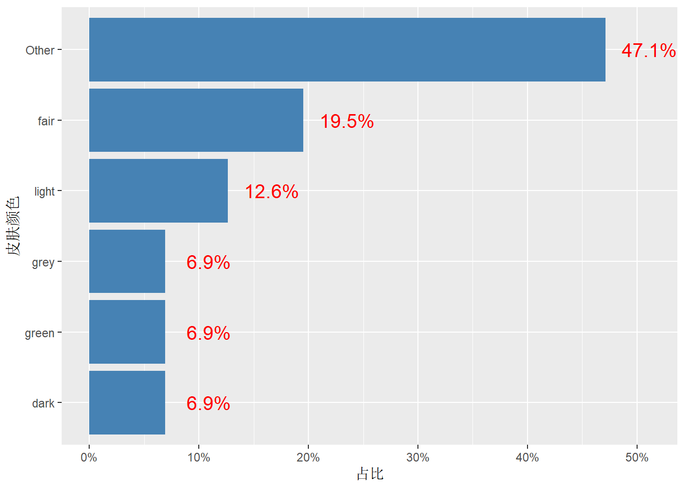
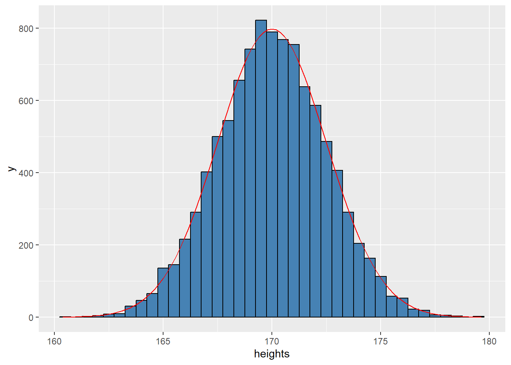

5 描述性统计分析
5.1 若干概念
1. 随机变量
当一件事情的结果无法预料时，就叫随机现象。表示随机现象一组结果的变量就是随机变量。
比如说，调查了100 个人的身高，这100 个身高的数据是随机变量身高的 数据。并不是说这些身高值是不固定可变的，而是这100 个身高值是一次调 查的结果，再调查100 个人就是另一组不同的100 个身高值。
2. 概率分布
随机变量既然是这样随机的，还有必要研究它吗？有必要！因为把多个随机结 果放在一起的时候，能发现一定的规律性。比如100 人的身高可能对称地分 布在175cm 附近，离得越远人数越少，即表现出一种正态分布规律性。 随机现象五花八门，但每一种随机现象表现出来的规律性是固定的，用数学语 言表达出来就是概率分布。所以，不同概率分布就是不同随机现象规律性的数 学描述。
统计学最常用到四大概率分布：正态分布、t 分布、卡方分布、F 分布。
比如正态分布\(𝑁 (𝜇, 𝜎^2)\), 𝜇 和𝜎 （小写的sigma）就是参数，它们只要取不同值，就是不同的 分布形状。
3. 总体和样本
- 总体(population)：是包含所研究的全部个体（数据）的集合。
- 样本(sample)：从总体中抽取的一部分个体的集合，样本包含个体的数 目称为样本量。
抽样的目的是根据样本数据提供的信息推断总体的特征，或者说，用样本统计 量推断总体参数。
比如，要研究天津市成年男性的身高，则所有天津市成年男性的身高数据 就是总体，但实际上不可能把所有这些身高都测量一遍，只能是随机抽取一部 分，比如100 人，测得身高数据，这就是样本，样本量是100。
4. 参数与统计量
参数(parameter)：用来描述总体特征的概括性值，是研究者想要了解的 总体的某种特征值，如总体均值(𝜇)、总体方差(𝜎2)、总体比例(𝜋) 等
统计量(statistic)：是用来描述样本特征的概括性数字度量，是根据样本 数据计算出来的量，由于抽样是随机的，因此统计量是样本的函数。与 上面总体参数对应的统计量是样本均值 (𝑥)̄ 、样本标准差 (𝑠2)、样本比例 (𝑝) 等。
由于总体数据通常是不知道的，故参数是未知常数。所以才进行抽样，根据样 本计算出相应统计量值去估计总体参数值。
5.2 （样本）统计量
5.2.1 数据位置的统计量
1. 均值(Mean)
均值，度量数据分布的中心位置：
\[ \bar x=\frac{1}{n} \sum_{i=1}^{n}x_i \]
2. 中位数(Median)
中位数，是位于最中间的那个数据，比中位数大和小的数据各占观测值的一半。 先将数据从小到大排序为：\(x_{(1)}\), ⋯ , \(x_{(𝑛)}\)，然后计算
\[ x_{0.5}= \begin{cases} x_{(\frac{n+1}{2})} & n为奇数\\ \frac{1}{2} (x_{(\frac{n}{2})}+x_{(\frac{n}{2}+1)}) & n为偶数 \end{cases} \]
中位数的优点是具有稳健性，即不受个别极端数据的影响。一般来说，正态分 布的数据用均值描述，偏态分布的数据最好是用中位数描述。比如，人均工资 有被平均了的感觉，中位数工资才是更合适的中间收入。
3. 分位数(Quantile)
中位数是0.5 分位数，位于0.5 位置的数。
0.25 分位数，称为下四分位数(Q1), 是位于0.25 那个位置的数，即比它小 的数占比是0.25, 比它大的数占比是0.75。 0.75 分位数，称为上四分位数(Q3)。
更一般地，\(𝑝\) 分位数，是位于\(𝑝\) 位置的数，即比它小的数占比是\(𝑝\), 比它大的 数占比是\(1 − 𝑝\). 或者说\(𝑛𝑝\) 的数比它小，\(𝑛(1 − 𝑝)\) 的数比它大。
4. 众数(Mode)
众数，是观测值中出现次数最多的数，对应分布的最高峰。众数常用于分类数 据，即出现频数最高的值。
5.2.2 数据分散程度的统计量
极差(Range)
极差，就是数据中的最大值和最小值之差
四分位距(Interquartile Range)
四分位距，是上下四分位数之差，即
\[ 𝐼𝑄𝑅 = 𝑄3 − 𝑄1 \] 样本方差(Variance)
\[ s^2=\frac{1}{n-1} \sum_{i=1}^{n} (x_i-\bar x)^2 \]
注意，分母除的是\(𝑛 − 1\), 这是为了保证用样本方差估计总体方差时，得到的 是无偏估计。
这个\(𝑛 − 1\) 也是自由度，在统计学中，几乎所有方法、所有统计量都会涉及自 由度。自由度，是计算样本统计量时能够自由取值的数值的个数。
总体方差公式（除以\(𝑛\)）时，是\(𝑛\) 个样本自由地从总体里抽取。但是样本方差 公式时多了一个约束条件，它们的和除以\(𝑛\)必须等于样本均值 \(\bar x\)，所以自由度 𝑛 减去1 个约束条件对自由度的损失，等于\(𝑛 − 1\)。
不同统计方法的自由度都不一样，但基本原则是每估计1 个参数，就需要消耗 1 个自由度。
以回归分析为例，若有𝑚 个自变量，则需要估计𝑚 + 1 个参数（包含截距 项），所以模型的F 检验用到的自由度是𝑛 − (𝑚 + 1). 这意味着只剩下 𝑛 − (𝑚 + 1) 个可以自由取值的数值用来估计模型误差
样本标准差(Standard Deviation) 样本方差的平方根即为标准差𝑠. 标准差的量纲与原数据一致。
变异系数(Coefficient of Variation) 变异系数，是将标准差占均值的百分比，可用于比较不同量纲数据的分散性：
\[ c_v=\frac{s}{\bar x} × 100\% \]
5.2.3 样本统计量的R实现
- mean(x): 计算数值向量x 的均值
- median(x): 计算数值向量x 的中位数
- quantile(x, p): 计算数值向量x 的p 分位数
- rstatix::get_mode(x): 计算向量x 的众数
- max(x)-min(x): 计算数值向量x 的极差
- IQR(x): 计算数值向量x 的四分位距
- var(x): 计算数值向量x 的样本方差
- sd(x): 计算数值向量x 的样本标准差
- 100*sd(x)/mean(x): 计算数值向量x 的变异系数
很多包提供了同时对多个变量进行（分组）描述汇总所有常见统计量的 函数，其中tidy 风格的是rstatix::get_summary_stats() 和 dlookr::describe().
library(rstatix)
iris %>%
group_by(Species) %>%
get_summary_stats(type = "full")## # A tibble: 12 × 14
## Species varia…¹ n min max median q1 q3 iqr mad mean sd
## <fct> <fct> <dbl> <dbl> <dbl> <dbl> <dbl> <dbl> <dbl> <dbl> <dbl> <dbl>
## 1 setosa Sepal.… 50 4.3 5.8 5 4.8 5.2 0.4 0.297 5.01 0.352
## 2 setosa Sepal.… 50 2.3 4.4 3.4 3.2 3.68 0.475 0.371 3.43 0.379
## 3 setosa Petal.… 50 1 1.9 1.5 1.4 1.58 0.175 0.148 1.46 0.174
## 4 setosa Petal.… 50 0.1 0.6 0.2 0.2 0.3 0.1 0 0.246 0.105
## 5 versico… Sepal.… 50 4.9 7 5.9 5.6 6.3 0.7 0.519 5.94 0.516
## 6 versico… Sepal.… 50 2 3.4 2.8 2.52 3 0.475 0.297 2.77 0.314
## 7 versico… Petal.… 50 3 5.1 4.35 4 4.6 0.6 0.519 4.26 0.47
## 8 versico… Petal.… 50 1 1.8 1.3 1.2 1.5 0.3 0.222 1.33 0.198
## 9 virgini… Sepal.… 50 4.9 7.9 6.5 6.22 6.9 0.675 0.593 6.59 0.636
## 10 virgini… Sepal.… 50 2.2 3.8 3 2.8 3.18 0.375 0.297 2.97 0.322
## 11 virgini… Petal.… 50 4.5 6.9 5.55 5.1 5.88 0.775 0.667 5.55 0.552
## 12 virgini… Petal.… 50 1.4 2.5 2 1.8 2.3 0.5 0.297 2.03 0.275
## # … with 2 more variables: se <dbl>, ci <dbl>, and abbreviated variable name
## # ¹variable5.3 统计图
描述统计是从不同方面对数据做了概要，想要进一步了解和探索数据，离不开 绘制统计图。不同类型的数据，适用不同类型的统计图。
5.3.1 分类数据的统计图
1. 条形图(Histogram)
条形图是最常用的类别比较图，是用竖直（或水平）的条形展示分类变量的分 布（频数），条形的高度代表频数。
- geom_bar(): 对原始数据绘制条形图
- geom_col(): 对汇总频数/频率的数据用绘制条形图
以starwars 数据集skin_color 绘制条形图为例：
- 用fct_lump() 将频数≤ 5 的类别做了合并
- 分组汇总，计算各组频数和频率
- 绘制条形图，将分类变量skin_color 按频率做了因子重排序，实现了对” 条形” 排序
- 在条形旁边增加文字注释，标记该条形所占百分比
- 翻转坐标轴，变成水平条形图
df <- starwars %>%
mutate(skin_color = fct_lump(skin_color, n = 5)) %>%
count(skin_color, sort = T) %>%
mutate(p = n / sum(n))
df## # A tibble: 6 × 3
## skin_color n p
## <fct> <int> <dbl>
## 1 Other 41 0.471
## 2 fair 17 0.195
## 3 light 11 0.126
## 4 dark 6 0.0690
## 5 green 6 0.0690
## 6 grey 6 0.0690ggplot(df, aes(fct_reorder(skin_color, p), p)) +
geom_col(fill = "steelblue") + # 汇总数据制作条形图
scale_y_continuous(labels = scales::percent) + ## 坐标轴标签由小数变成百分比形式
labs(x = "皮肤颜色", y = "占比") +
geom_text(aes(
y = p + 0.04, ## y的偏移量
label = str_c(round(p * 100, 1), "%")
), ## 将多个字符串合并成一个字符串
size = 5, color = "red"
) +
coord_flip() ## 翻转xy坐标轴
2. 饼图
待补充
5.3.2 连续数据的统计图
1. 直方图
连续数据常用直方图来展示变量取值的分布，利用直方图可以估计总体的概率 密度。 将变量取值的范围分成若干区间。直方图是用面积而不是用高度来表示数，总 面积是100%. 每个区间矩形的面积恰是落在该区间内的百分数（频率），所以
矩形的高= 频率/区间长度= 密度
特别地，若区间是等长的，则” 矩形的高” 就是频率。注意：直方图矩形之间是 没有间隔的。
用geom_histogram() 绘制直方图。频率直方图与概率密度曲线正好搭配， 因为频率直方图的条形宽度趋于0，就是概率密度曲线。
若想绘制频数直方图+ 概率密度曲线，就需要对密度做一个放大：条形宽度 * 样本数倍。
set.seed(123)
df <- tibble(heights = rnorm(10000, 170, 2.5))
ggplot(df, aes(x = heights)) +
geom_histogram(
fill = "steelblue", color = "black",
binwidth = 0.5
) +
stat_function(
fun = ~ dnorm(.x, mean = 170, sd = 2.5) * 0.5 * 10000,
color = "red"
)
2. 箱线图
箱线图，是在一条数轴上：
- 以数据的上下四分位数(Q1-Q3) 为界画一个矩形盒子（中间50% 的数 据落在盒内）；
- 在数据的中位数位置画一条线段为中位线；
- 默认延长线为盒长的1.5 倍，之外的点认为是异常值。
箱线图的主要应用就是，剔除数据的异常值、判断数据的偏态和尾重、可视化 组间差异。
用geom_boxplot() 绘制箱线图，例如比较不同drv 下，hwy 的组间差异
ggplot(mpg, aes(x = drv, y = hwy)) +
geom_boxplot()均值线与误差棒图
以ToothGrowth 数据集为例，先自定义分组汇总函数计算分组均值和标准 误：
my_summary <- function(data, .summary_var, ...) {
summary_var <- enquo(.summary_var)
data %>%
group_by(...) %>%
summarise(
mean = mean(!!summary_var, na.rm = TRUE),
sd = sd(!!summary_var, na.rm = TRUE)
) %>%
mutate(se = sd / sqrt(n()))
}
df <- my_summary(ToothGrowth, len, supp, dose)
df## # A tibble: 6 × 5
## # Groups: supp [2]
## supp dose mean sd se
## <fct> <dbl> <dbl> <dbl> <dbl>
## 1 OJ 0.5 13.2 4.46 2.57
## 2 OJ 1 22.7 3.91 2.26
## 3 OJ 2 26.1 2.66 1.53
## 4 VC 0.5 7.98 2.75 1.59
## 5 VC 1 16.8 2.52 1.45
## 6 VC 2 26.1 4.80 2.77pd <- position_dodge((0.05))
ggplot(df, aes(dose, mean, color = supp, group = supp)) +
geom_errorbar(aes(ymin = mean - se, ymax = mean + se),
color = "black", width = 0.1, position = pd
) +
geom_line(position = pd) +
geom_point(position = pd, size = 3, shape = 21, fill = "white") +
xlab(" 剂量(mg)") +
ylab(" 牙齿生长") +
scale_color_hue(
name = " 喂养类型", breaks = c("OJ", "VC"),
labels = c(" 橘子汁", " 维生素C"), l = 40
) +
scale_y_continuous(breaks = 0:20 * 5)5.3.3 列联表
对分类变量做描述统计，通常是计算各水平值出现的频数和占比，得到列联表 （交叉表）。用table() 可以实现，但功能很弱还不够tidy. janitor 包提供了更强大的tabyl() 函数，可以生成一个、两个、三个变 量的列联表，再结合adorn_*() 函数，可以很方便地按想要的格式添加行 列合计、占比等。
一维列联表，添加合计行：
library(janitor)## Warning: package 'janitor' was built under R version 4.2.3##
## Attaching package: 'janitor'## The following object is masked from 'package:rstatix':
##
## make_clean_names## The following objects are masked from 'package:stats':
##
## chisq.test, fisher.testmpg %>%
tabyl(drv) %>%
adorn_totals("row") %>% # 添加合计行
adorn_pct_formatting() # 设置百分比格式## drv n percent
## 4 103 44.0%
## f 106 45.3%
## r 25 10.7%
## Total 234 100.0%二维列联表，添加列占比和频数
library(janitor)
mpg %>%
tabyl(drv, cyl) %>%
adorn_percentages("col") %>% # 添加列占比
adorn_pct_formatting(digits = 2) %>% # 设置百分比格式
adorn_ns() # 添加频数## drv 4 5 6 8
## 4 28.40% (23) 0.00% (0) 40.51% (32) 68.57% (48)
## f 71.60% (58) 100.00% (4) 54.43% (43) 1.43% (1)
## r 0.00% (0) 0.00% (0) 5.06% (4) 30.00% (21)